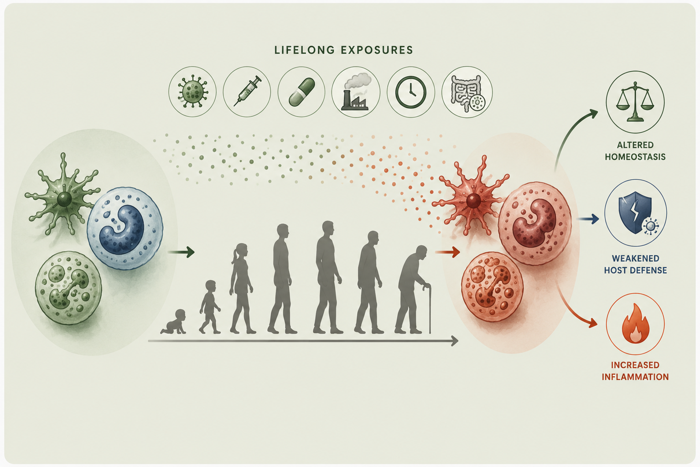
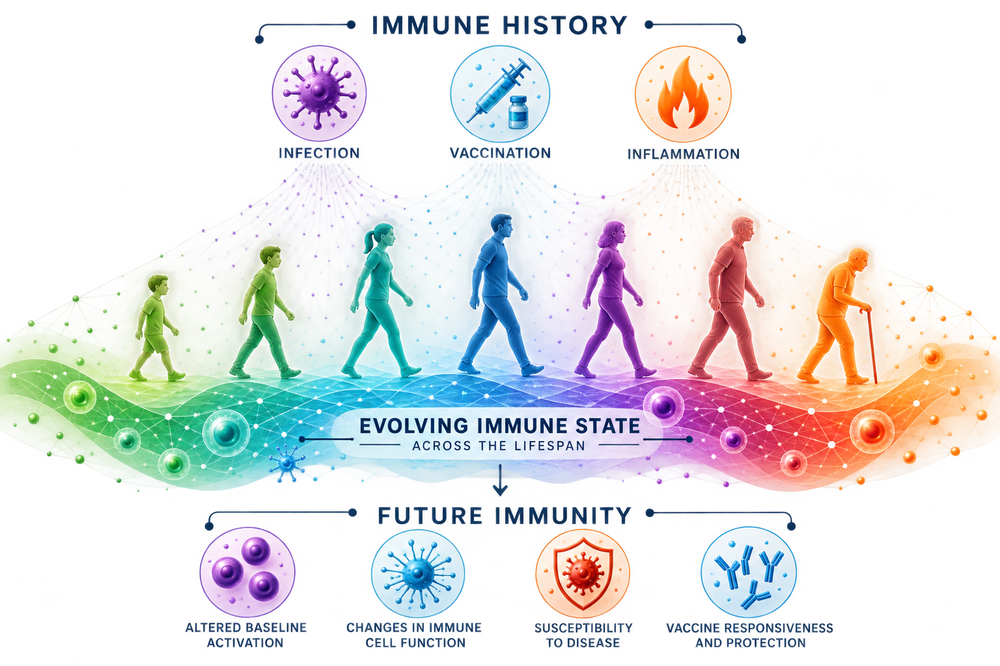
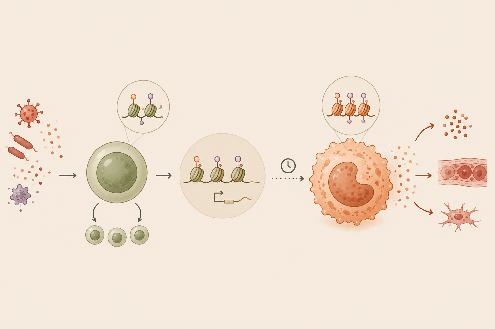

01

IMMUNE AGING
How does aging reshape innate immune cells?
We investigate age-associated changes in monocytes, dendritic cells, and hematopoietic progenitors, with particular focus on inflammatory and epigenetic programs.
AGING · IMMUNITY · VACCINES
Our immune system is shaped by experiences accumulated across the lifespan—from infections and vaccinations to inflammation. We study how these experiences leave lasting molecular and cellular imprints that alter the immune state and shape future immune responses. We combine systems immunology, single-cell multiomics, and experimental models to uncover these mechanisms.

RESEARCH
From chromatin and transcriptional programs inside individual cells to coordinated immune responses across tissues and people.

IMMUNE AGING
We investigate age-associated changes in monocytes, dendritic cells, and hematopoietic progenitors, with particular focus on inflammatory and epigenetic programs.

INFLAMMATORY MEMORY
We study how chronic inflammation reprograms innate immune cells and their progenitors, resulting in durably altered innate immune states in aging.
VACCINE IMMUNITY
We combine human studies and experimental models to understand the innate programs that shape vaccine responsiveness and durable immunity.
OUR APPROACH
Our work integrates high-dimensional human immunology with mechanistic experiments, allowing us to move between discovery and biological explanation.
SELECTED WORK
FEATURED PAPER
A short, plain-language description of the key finding will make the science much more approachable than a citation alone.
Read paper ↗PAPER
PAPER
OUR TEAM
We bring together immunology, genomics, computation, and experimental biology to understand how immune systems change over time.
Meet the lab →LAB NEWS
Add short updates about papers, grants, talks, new members, or lab milestones.
These can stay brief so the homepage remains current without becoming difficult to maintain.
We can later automate or simplify how these cards are added.
JOIN THE LAB
We welcome conversations with students, trainees, collaborators, and scientists interested in immune aging, systems immunology, and vaccination.
Get in touch ↗